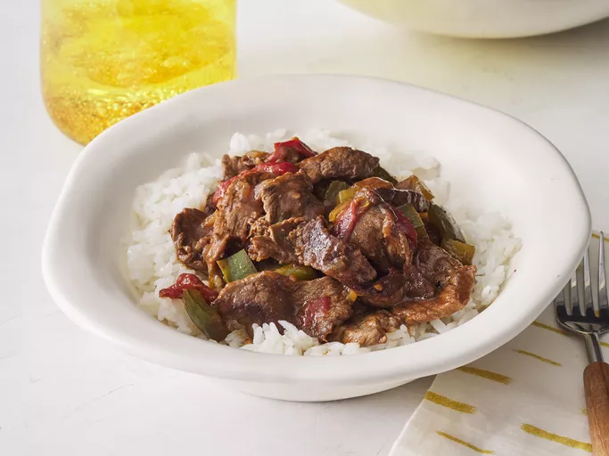

Slow Cooker Pepper Steak
This slow cooker pepper steak always comes out tender and flavorful and is one of our family's favorites. It's great to make ahead of time and serve over rice, egg noodles, or chow mein.
Prep Time
20 Minutes
Cook Time
6 Hours 10 Minutes
Total Time
6 Hours 30 Minutes
Indgredients You Will Need
Directions
Step 1 Gather Ingredients

Step 2
Sprinkle beef sirloin strips with garlic powder. Heat vegetable oil in a large skillet over medium heat and sear beef strips, about 5 minutes per side. Transfer to a slow cooker.

Step 3
Mix bouillon cube with hot water in a separate container until dissolved, then mix in cornstarch until dissolved.

Step 4
Pour into the slow cooker with beef strips. Stir in onion, green peppers, stewed tomatoes, soy sauce, sugar, and salt.

Step 5
Cover, and cook on High for 3 to 4 hours, or on Low for 6 to 8 hours.